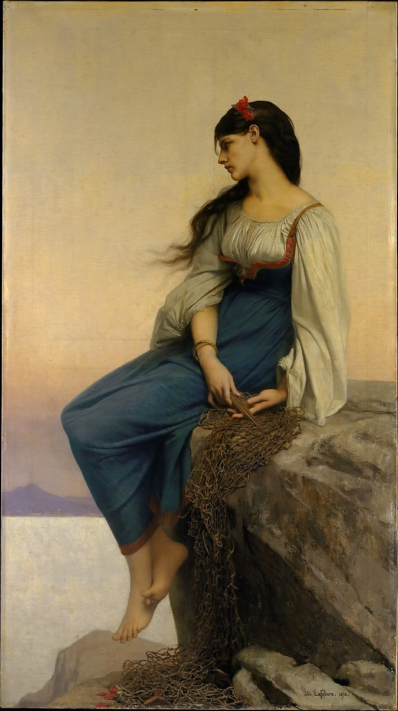

<head>
<meta charset="UTF-8" />
<meta name="keywords" content="drawing, painting" />
<meta name="description" content="drawings by Sunjy" />
<title>Sunjy</title>
<link rel="shortcut icon" type="image/x-icon" href="../../mImages/mCommon/favicon.ico" media="screen" />
<link rel="stylesheet" type="text/css" href="../../mCsses/mCommon/mCssA.css" />
<link rel="stylesheet" type="text/css" href="../../mCsses/mCommon/mCssB.css" />
<link rel="stylesheet" type="text/css" href="../../mCsses/mCommon/mCssC.css" />
<link rel="stylesheet" type="text/css" href="../../mCsses/mCommon/mCssD.css" />
<link rel="stylesheet" type="text/css" href="../../mCsses/mContent/mCssA.css" />
<link rel="stylesheet" type="text/css" href="../../mCsses/mContent/mCssB.css" />
<link rel="stylesheet" type="text/css" href="../../mCsses/mContent/mCssC.css" />
<link rel="stylesheet" type="text/css" href="../../mCsses/mContent/mCssD.css" />
</head>
<script type="text/javascript" src="../../mScripts/mContent/mContentAA.js" /></script>
<script type="text/javascript" src="../../mScripts/mContent/mContentAB.js" /></script>
<script type="text/javascript" src="../../mScripts/mContent/mContentAC.js" /></script>
<script type="text/javascript" src="../../mScripts/mContent/mContentAD.js" /></script>
<script type="text/javascript"></script> 
<script type="text/javascript">
document.write('<div class="mImgAbsolute"></div>');
/*
document.write('<p class="mFontSizeBColor" />From a white paper...</p>');
document.write('<table class="center"><tr><td>');
document.write('');
document.write('</td></tr></table>');
*/
</script>


<script type="text/javascript">
document.write('<p class="mFontSizeBColor" />Graziella </p>');
document.write('<p class="mFontSizeSColor" />By Jules-Joseph Lefebvre, 1878. Winner of the coveted Prix de Rome in 1861, Lefebvre fulfilled his early promise both as a painter of meticulously executed portraits and nudes and as a teacher: during his long career, he earned three Salon medals, was appointed to the French Academy of Fine Arts, and attained the rank of Commander in the Legion of Honor.<br><br>Catharine Lorillard Wolfe commissioned Graziella in 1878. It depicts the heroine of Alphonse de Lamartine’s popular tale of the same name, which was first published in 1849. The story revolves around the narrator’s love for the beautiful daughter of a Neapolitan fisherman. Lefebvre portrayed her mending a fishing net as she gazes over her shoulder toward the distant simmering profile of Mount Vesuvius.</p>');
document.write('<table class="center" /><tr><td>');
document.write('<br>Catharine Lorillard Wolfe commissioned Graziella in 1878. It depicts the heroine of Alphonse de Lamartine’s popular tale of the same name, which was first published in 1849. The story revolves around the narrator’s love for the beautiful daughter of a Neapolitan fisherman. Lefebvre portrayed her mending a fishing net as she gazes over her shoulder toward the distant simmering profile of Mount Vesuvius." />');
document.write('</td></tr></table>');
</script>


